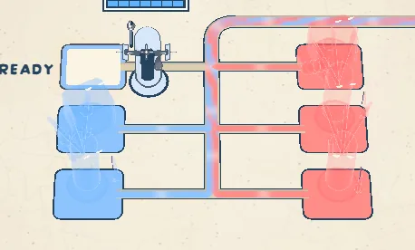
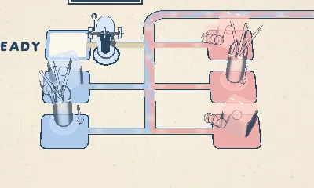
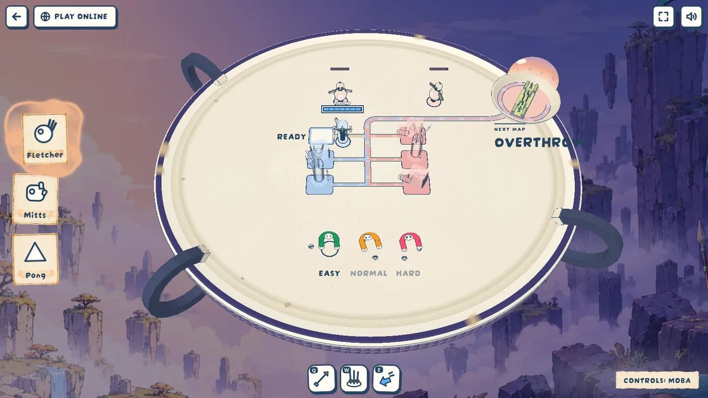

Lobby holograms read on their plates
Decided · 2026-10-13 · thr_pag3q8z9mf
Do the holograms read on their plates now, and are the paler plates still clearly two teams? Before is Oskar's screenshot; after is the default lobby camera, cropped, then the full view.


